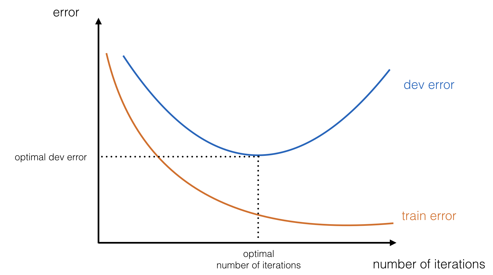

The ultimate goal for your neural network is to generalize to “unseen data”. The ability of a neural network to generalize to unseen data depends on two factors:
Your network is too simple to understand the training data’s salient features. This is called underfitting the training set. A common trick to avoid underfitting is to deepen your neural network by adding more layers.
Caption...
You network is complex enough to understand the training data in a “hard-coded” way. It won’t generalize because it didn’t need to understand the salient features of the dataset to perform well on the training set. This is called overfitting the training set.

Caption...
The best way to make your model generalize is to gather a larger dataset, but this is not always possible. Regularization methods are designed to help your model generalize, and not overfit the training data. In this post, you will learn various methods we use in order to regularize our models. Our recommendations will be accompanied by intuitive explanations.
In order to estimate the ability of your model to generalize, you will split your dataset into three (or sometimes more) sets: training, validation (dev) and test. Your model is able to generalize if it was trained on the training set, tuned on the validation set, and still performs well on the test set.
| Training | Validation | Test |
|---|---|---|
| ... | ... | ... |
Let’s delve into the methods to help get the test set performance closer to the dev and train set performances.
The easiest but widely used method is called early stopping. During the iterative optimization process of finding the correct parameters for your model, if you evaluate your model’s error on the training and validation set, you might see such curves:
Based on this observation, you can state that after the 30,000th epoch, your model starts overfitting to the training set. Early stopping means “saving the model’s parameters at the 30,000th epoch”. The saved model is the best performing model on the dev set and will likely generalize better to the test set.
Consider a concrete example such as “day vs. night image classification”. Rather than understanding the inherent features of the data, your model learned the training images by heart. You do not want this.
It is easy to do. Deep learning frameworks, such as Tensorflow, Pytorch and Keras, offer options to save your model’s parameters regularly during training. Here are the corresponding lines of code:
Code...
It is quicker than other regularization methods, because you do not have any regularization hyperparameter to tune. As a comparison, L2 regularization (resp. dropout) requires you to tune a regularization hyperparameter (resp. keep probability.) It might take you several experiments to regularize your model with L2, but only one run to do so with early stopping.
Among the below distributions, select the one to use to initialize your parameters. 3.
The grid below refers to the input images, Blue squares represent correctly classified images. Red squares represent misclassified images.
Input batch of 100 images
Output predictions of 100 images
In order to avoid overfitting the training set, one can try to reduce the complexity of the model by removing layers, and consequently decreasing the number of parameters. Another way to constrain a network and lower its complexity is to:
Limit the growth of the weights through some kind of weight decay.
The goal is to prevent the weights from growing too large, unless it is really necessary.
"Often the number of free parameters, i. e. the number of weights and thresholds, is used as a measure of the network complexity, and algorithms have been developed, which minimizes the number of weights while still keeping the error on the training examples small [4,5,6]. This minimization of the number of free parameters is not always what is needed"
"A different way to constrain a network, and thus decrease its complexity, is to limit the growth of the weights through some kind of weight decay. It should prevent the weights from growing too large unless it is really necessary. It can be realized by adding a term to the cost function that penalizes large weights,"
"We conclude that a weight decay has two positive effects on generalization in a linear network: 1) It suppresses any irrelevant components of the weight vector by choosing the smallest vector that solves the learning problem. 2) If the size is chosen right, it can suppress some of the effect of static noise on the targets."
"This can often boosts generalization a lot, because it stops the weight from fitting the sampling error". "It makes a smoother model such that the output changes more slowly, as the input changes."
Select an artificial landscape .
Select regularization method and penalization parameter .
Dropout...

Given a complex speech (audio) dataset to perform trigger word detection, this is roughly how we would find the best model:
Successfully training a model on complex tasks is complicated. You need to find the appropriate model architecture able to understand the complexity of the dataset. Once you found such an architecture, make it generalize using regularization.
↑ Back to top